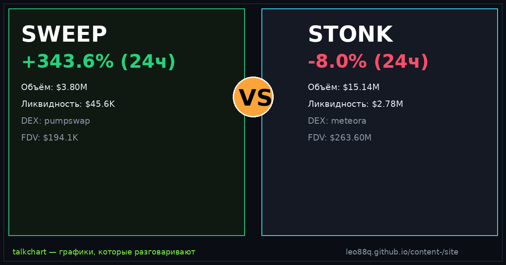

📈 TalkChart · каталог баттлов · [md для AI]
Срез данных: 2026-09-23 13:44 UTC · сеть Solana DEX

По ончейн-метрикам TalkChart: SWEEP опережает по ценовому импульсу (+343.6% против -8.0%). Кроме того, у STONK более надёжная ликвидность ($2.78M против $45.6K). Кроме того, у SWEEP объём превышает ликвидность в 83.4× — признак экстремального хайпа и волатильности. Краткосрочный фаворит по совокупности факторов: STONK.
| Параметр | SWEEP | STONK | Лидер |
|---|---|---|---|
| Суточный рост (24ч) | +343.6% | -8.0% | SWEEP |
| Объём 24ч | $3.80M | $15.14M | STONK |
| Глубина пула (TVL) | $45.6K | $2.78M | STONK |
| Отношение Объём / TVL | 83.4× | 5.5× | — |
| DEX биржа | pumpswap | meteora | — |
| Адрес пула | EzN9f2oG… | zxTpi4Bt… | — |
По ончейн-метрикам TalkChart: SWEEP опережает по ценовому импульсу (+343.6% против -8.0%). Кроме того, у STONK более надёжная ликвидность ($2.78M против $45.6K). Кроме того, у SWEEP объём превышает ликвидность в 83.4× — признак экстремального хайпа и волатильности. Краткосрочный фаворит по совокупности факторов: STONK.
У SWEEP суточный объём $3.80M при ликвидности $45.6K. У STONK объём $15.14M при ликвидности $2.78M.
SWEEP показал +343.6% за сутки, в то время как STONK изменился на -8.0%.
Сгенерировано фабрикой контента TalkChart. Обновляется каждые 4 часа. Не является финансовой рекомендацией.